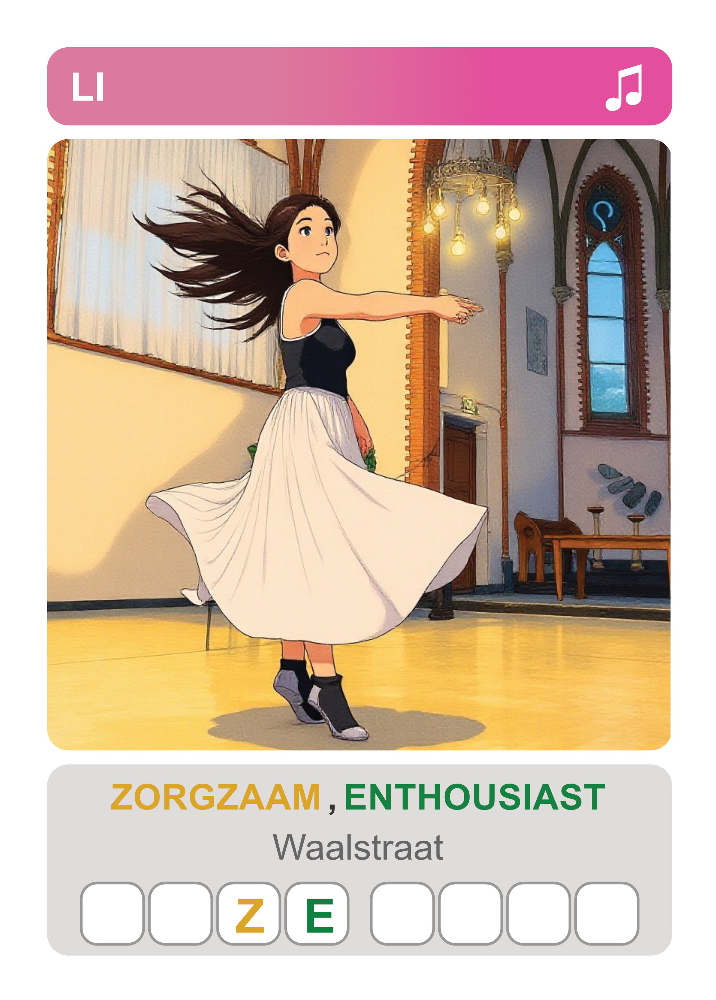

Hoe Speel Ik?

Introductie: Er zijn twee manieren om Ik ken je te spelen! Kies of je samen wilt werken met je vrienden, of dat je een vriendelijke wedstrijd wilt spelen.
Waar Krijg Ik?

Hoe krijg je de kaarten: Je kunt de kaarten ophalen bij evenementen in het wijklokaal of in de wijktuin. De kaarten zijn gratis beschikbaar voor alle kinderen in de buurt!
Word Een Kaart
Wil jij op een kaart? Wil je zelf op een kaart komen, of ken je een leuke plek in de buurt? Neem contact met ons op via WhatsApp of Signal via 0637652861. We zoeken kinderen, leuke volwassenen en bijzondere plekken uit de buurt om op de kaarten te zetten!
Over Het Project

Over het project: Ik ken je is een project om kinderen in de buurt met elkaar te verbinden. Door samen te spelen leren kinderen elkaar beter kennen en ontdekken ze hun buurt. Dit project is ontstaan uit... [details over het project, wie het heeft gemaakt, wat het doel is, etc.]